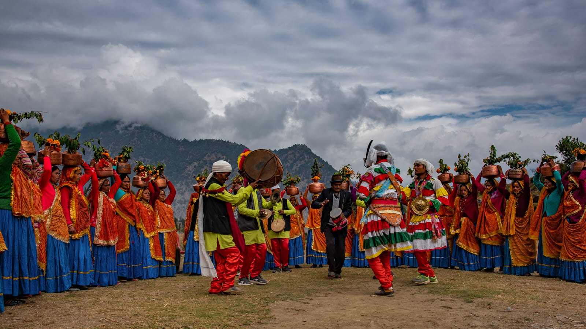

Exploring India's Culture and Heritage
Classical Dance Forms of India
The origins of Chholiya dance can be traced back over a thousand years, deeply rooted in the martial traditions of the Rajput warriors who migrated and settled in the Kumaon region.
Chholiya is a traditional folk dance form of the Kumaon region in Uttarakhand, India. Known for its martial style, it is an energetic and powerful dance mainly performed by men. This dance is a vibrant display of cultural pride and is deeply embedded in the local customs and rituals of the Kumaoni people. It plays a key role in wedding processions, religious events, and regional festivals.
The Chholiya dance is unique because of its incorporation of martial elements such as sword-fighting and shield maneuvers. Dancers dress in warrior-like attire—often white robes, turbans, and metal chest plates—and carry real or wooden swords and shields. The choreography includes battle-like formations, sharp movements, and intense expressions that mimic the strategies of warriors in combat. The rhythm is maintained through traditional instruments like the dhol, damau, turri, and narsingha, which add a sense of urgency and energy to the performance.
Chholiya dates back over a thousand years and has its roots in the martial traditions of the Rajput clans who settled in the Kumaon region. These warrior groups brought their combat styles and rituals with them, which eventually blended with local customs. What began as a form of physical training and a celebration of military victories gradually evolved into a ceremonial dance form. Over centuries, Chholiya has transitioned from a battlefield tradition to a cultural performance, without losing its original essence of bravery and strength.
Today, Chholiya continues to thrive as an essential part of Kumaoni culture. It is performed not only in rural celebrations but also at cultural festivals, tourism events, and national platforms to represent the heritage of Uttarakhand. Various groups and cultural organizations work to preserve and promote this traditional dance, ensuring that younger generations stay connected to their roots. Despite modernization, Chholiya remains a powerful symbol of pride, identity, and cultural continuity. :